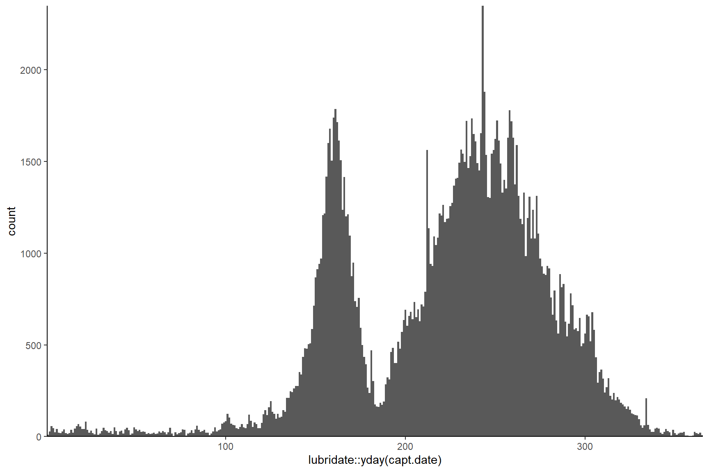
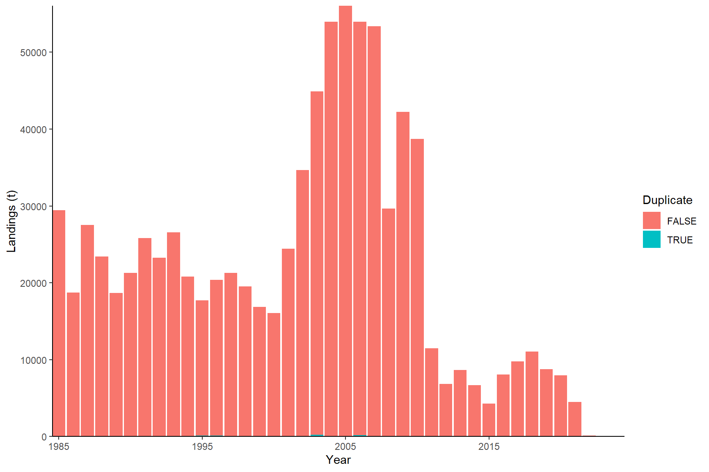
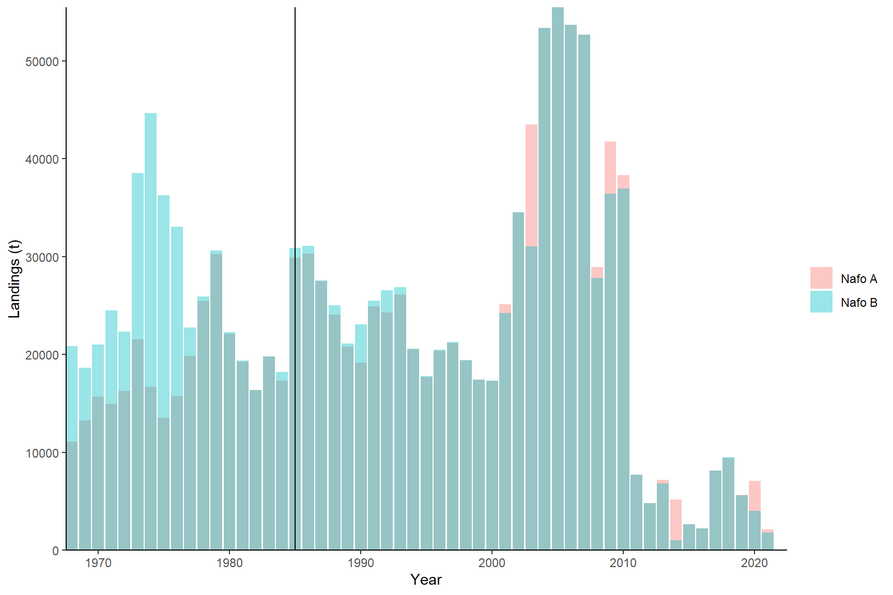
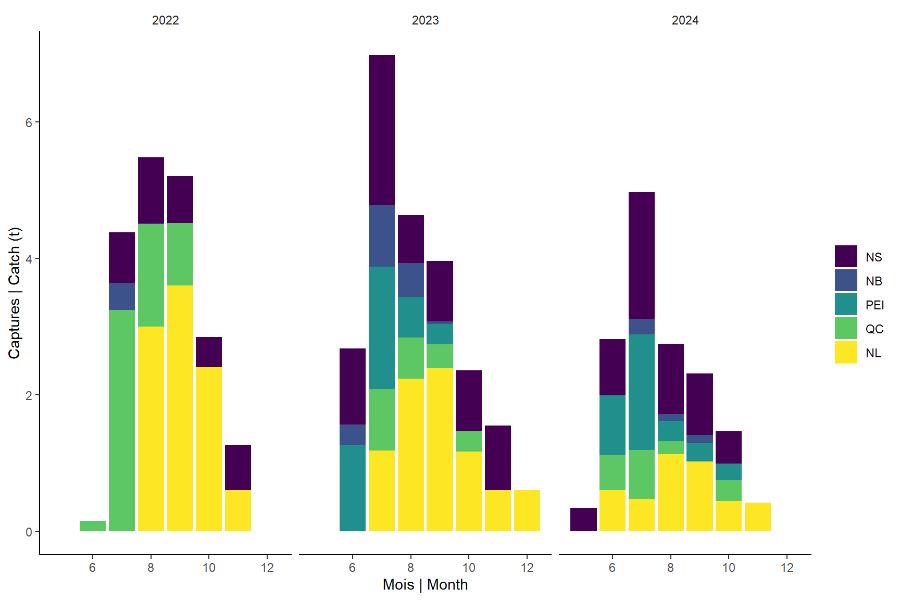

Read
2025-02-03
1 SET-UP
source('0.0_settings.R')
source("read.ziff.R")2 Landings
2.1 ZIFF
sp_code <- find.species(my.species,'ziff')
kable(sp_code) | x | |
|---|---|
| Mackerel bait (fishing licence only) | 248 |
| Mackerel commercial (fishing licence) | 249 |
| Mackerel | 250 |
| Exploratory mackerel (fishing licence) | 951 |
| Mackerel head | 960 |
#pending catch R update. Dowland from BD peches impossible. Copy on computer rename to start with "version_totale_" and change .txt to .csv
ziffR <- paste0(dir.rdat, "ziff.Rdata")
if(!file.exists(ziffR)){
ziff <- read.ziff(sp_code,path=dir.ziff,year=my.year,language='en')
# Species included:
with(ziff, table(species,year))
ziff <- ziff[ziff$species %in% c(250),] # code 960: few heads in 1996 code 951: wrong whelk (clams main target..)
names(ziff)[19] <- "nafo.sub"
names(ziff)[20] <- "nafo"
save(ziff, file = ziffR)
}else{
load(ziffR)
}
# Creation time
df <- file.info(list.files(dir.rdat, full.names = T,pattern="ziff"))
df[which.max(df$mtime),'mtime']
## [1] "2025-01-27 15:20:09 EST"2.1.1 CHECKS
2.1.1.1 areas
Nafo 5Y and 5Ze are partially in the US.
# NAFO 5 = landings in Canadian EEZ (northern contingent)
kable(with(ziff, table(nafo,month)),caption = 'Number of records per month and NAFO area, entire database') | 1 | 2 | 3 | 4 | 5 | 6 | 7 | 8 | 9 | 10 | 11 | 12 | |
|---|---|---|---|---|---|---|---|---|---|---|---|---|
| 2G | 0 | 0 | 0 | 0 | 0 | 0 | 0 | 0 | 0 | 1 | 0 | 0 |
| 2J | 0 | 0 | 0 | 0 | 0 | 0 | 2 | 6 | 60 | 2 | 0 | 0 |
| 3K | 2 | 0 | 0 | 4 | 8 | 49 | 270 | 5823 | 9904 | 4541 | 1556 | 99 |
| 3L | 0 | 0 | 0 | 12 | 18 | 12 | 182 | 1500 | 3195 | 1701 | 585 | 20 |
| 3O | 0 | 0 | 31 | 71 | 0 | 0 | 0 | 1 | 0 | 1 | 0 | 0 |
| 3PN | 0 | 0 | 0 | 2 | 0 | 3 | 83 | 1056 | 803 | 585 | 202 | 3 |
| 3PS | 30 | 1 | 8 | 7 | 22 | 107 | 498 | 1756 | 862 | 236 | 133 | 5 |
| 4R | 0 | 0 | 1 | 7 | 24 | 98 | 1521 | 8146 | 6836 | 3924 | 403 | 2 |
| 4S | 0 | 0 | 0 | 0 | 26 | 104 | 631 | 1174 | 340 | 54 | 0 | 0 |
| 4T | 6 | 1 | 1 | 175 | 3693 | 54353 | 29355 | 60133 | 60163 | 22713 | 1868 | 15 |
| 4VN | 3 | 1 | 1 | 9 | 1136 | 3483 | 1742 | 2998 | 5298 | 3879 | 133 | 5 |
| 4VS | 26 | 6 | 56 | 2 | 59 | 32 | 20 | 50 | 9 | 7 | 5 | 0 |
| 4W | 915 | 551 | 493 | 1394 | 4074 | 2001 | 951 | 1251 | 1131 | 1020 | 803 | 503 |
| 4X | 77 | 251 | 199 | 299 | 6448 | 6963 | 3896 | 6350 | 6378 | 3899 | 3066 | 132 |
| 5Y | 0 | 0 | 4 | 0 | 2 | 7 | 4 | 4 | 0 | 2 | 21 | 11 |
| 5ZE | 11 | 0 | 0 | 0 | 1 | 36 | 0 | 67 | 74 | 0 | 0 | 1 |
2.1.1.2 NA weights
How many NA weights are there?
na <- ddply(ziff,c('year'),plyr::summarise,
nacatch=length(catch[is.na(catch)]),
nacatchland=length(catch[is.na(catch)&is.na(catch.landed)]),
nacatchlandvalue=length(catch[is.na(catch)&is.na(catch.landed)&is.na(catch.value)]))
kable(na)| year | nacatch | nacatchland | nacatchlandvalue |
|---|---|---|---|
| 1985 | 2 | 0 | 0 |
| 1986 | 1 | 0 | 0 |
| 1987 | 6 | 1 | 0 |
| 1988 | 5 | 0 | 0 |
| 1989 | 6 | 0 | 0 |
| 1990 | 2 | 2 | 0 |
| 1991 | 8 | 3 | 2 |
| 1992 | 6 | 2 | 2 |
| 1993 | 3 | 0 | 0 |
| 1994 | 33 | 9 | 0 |
| 1995 | 90 | 54 | 1 |
| 1996 | 49 | 37 | 24 |
| 1997 | 50 | 25 | 6 |
| 1998 | 36 | 22 | 0 |
| 1999 | 35 | 27 | 0 |
| 2000 | 20 | 8 | 0 |
| 2001 | 26 | 17 | 17 |
| 2002 | 17 | 11 | 1 |
| 2003 | 39 | 18 | 18 |
| 2004 | 19 | 19 | 17 |
| 2005 | 79 | 72 | 2 |
| 2006 | 23 | 20 | 6 |
| 2007 | 39 | 35 | 6 |
| 2008 | 10 | 8 | 0 |
| 2009 | 6 | 6 | 1 |
| 2010 | 5 | 4 | 2 |
| 2011 | 21 | 21 | 5 |
| 2012 | 37 | 37 | 4 |
| 2013 | 18 | 17 | 3 |
| 2014 | 24 | 24 | 9 |
| 2015 | 26 | 26 | 0 |
| 2016 | 27 | 26 | 5 |
| 2017 | 52 | 52 | 3 |
| 2018 | 23 | 23 | 6 |
| 2019 | 461 | 461 | 434 |
| 2020 | 315 | 314 | 273 |
| 2021 | 56 | 56 | 13 |
| 2022 | 31 | 31 | 0 |
| 2023 | 22 | 22 | 18 |
| 2024 | 24 | 24 | 6 |
2.1.1.3 catch vs land weight
How different are both?
dif <- (ziff$catch-ziff$catch.landed)/1000 #t
kable(round(quantile(dif[!is.na(dif)],c(0,0.025,0.25,0.5,0.75,0.975,1)),3),caption = 'Difference between catch.landed and catch (kg)')| x | |
|---|---|
| 0% | -73.147 |
| 2.5% | -0.005 |
| 25% | 0.000 |
| 50% | 0.000 |
| 75% | 0.000 |
| 97.5% | 0.340 |
| 100% | 87.069 |
2.1.1.4 0 weights
How many 0 weights are there?
with(ziff[!is.na(ziff$catch) & ziff$catch==0,],table(year))
## < table of extent 0 >2.1.1.5 Jan-1
Check that there is no abnormal quantity of landings on January first (possibly records for which data is unknown).
ggplot(ziff,aes(x=lubridate::yday(capt.date)))+geom_histogram(binwidth = 1)+
scale_x_continuous(expand=c(0,0))+
scale_y_continuous(expand=c(0,0))
## Warning: Removed 187576 rows containing non-finite outside the scale range (`stat_bin()`).
2.1.1.6 NBPC
There are 3 special nbpc numbers that indicate landings that are not necessarily daily (e.g., monthly totals) or for which the data is only approximate. For instance, B00000 landings seems to be on the first of last of a certain month. For analyses of daily landings these might need to be excluded.
kable(with(ziff[ziff$npbc %in% c('000000', 'B00000', '190000'),], table(year,npbc))) | 000000 | 190000 | B00000 | |
|---|---|---|---|
| 1985 | 1371 | 224 | 523 |
| 1986 | 851 | 207 | 1266 |
| 1987 | 934 | 195 | 1214 |
| 1988 | 785 | 111 | 849 |
| 1989 | 685 | 184 | 953 |
| 1990 | 752 | 224 | 743 |
| 1991 | 719 | 97 | 748 |
| 1992 | 567 | 127 | 764 |
| 1993 | 463 | 99 | 800 |
| 1994 | 589 | 136 | 1020 |
| 1995 | 514 | 98 | 920 |
| 1996 | 334 | 190 | 398 |
| 1997 | 131 | 229 | 598 |
| 1998 | 13 | 113 | 359 |
| 1999 | 8 | 7 | 413 |
| 2000 | 22 | 7 | 8 |
| 2001 | 16 | 7 | 654 |
| 2002 | 19 | 6 | 256 |
| 2003 | 457 | 7 | 0 |
| 2004 | 0 | 7 | 0 |
| 2005 | 0 | 7 | 0 |
| 2006 | 0 | 7 | 0 |
| 2007 | 0 | 7 | 0 |
| 2008 | 0 | 8 | 0 |
| 2009 | 0 | 8 | 0 |
| 2010 | 0 | 8 | 0 |
| 2011 | 0 | 8 | 0 |
| 2012 | 0 | 8 | 0 |
| 2013 | 0 | 8 | 0 |
| 2014 | 0 | 8 | 0 |
| 2015 | 0 | 8 | 0 |
| 2016 | 0 | 8 | 0 |
| 2017 | 0 | 8 | 0 |
| 2018 | 0 | 8 | 0 |
| 2019 | 0 | 8 | 0 |
| 2020 | 0 | 16 | 0 |
| 2021 | 0 | 14 | 0 |
| 2022 | 0 | 17 | 0 |
| 2023 | 0 | 10 | 0 |
2.1.1.7 Duplicates
There are rows that are 100% identical (same vessel, catch and landing date, trip, etc. AND even landed weight). Those are removed, but the effect is negligible.
# Duplicates
dup <- data.frame(year=ziff$year,catch=ziff$catch,dup=duplicated(ziff))
dupd <- ddply(dup,c('year','dup'),plyr::summarise,catch=sum(catch,na.rm=TRUE))
ziff <- ziff[!dup$dup,]
ggplot(dupd,aes(x=year,y=catch/1000,fill=dup))+
geom_bar(stat='identity',position='stack')+
scale_x_continuous(expand=c(0,0))+
scale_y_continuous(expand=c(0,0))+
labs(x='Year',y='Landings (t)',fill='Duplicate')
2.2 NAFO
nafoAR <- paste0(dir.rdat, "nafoA.Rdata")
nafoBR <- paste0(dir.rdat, "nafoB.Rdata")
if(!all(file.exists(c(nafoAR,nafoBR)))){
### NAFO database A (annual) ---------------------------------
sp_code <- find.species(my.species,'nafoA');sp_code
nafoA <- read.nafoA(paste0(dir.nafo,'statlandA.csv'),species=sp_code[1], year=my.year)
# Canadian caught mackerel outside of my.nafo
with(nafoA[!grepl(paste0(my.nafo, collapse = "|"),nafoA$nafo)&
grepl('canada',nafoA$country,ignore.case = TRUE),] ,table(year,nafo))
# only keep my.nafo; other areas are not from nothern contingent (winter months in US or Europe)
nafoA <- nafoA[grepl(paste0(my.nafo, collapse = "|"),nafoA$nafo),]
table(nafoA$nafo)
save(nafoA, file = nafoAR)
### NAFO data base B (monthly) ---------------------------------
sp_code <- find.species(my.species,'nafoB');sp_code
nafoB <- read.nafoB(path=dir.nafo,species=sp_code[1],year=my.year,overwrite=FALSE) # overwrite=TRUE if new download
# Canadian caught mackerel outside of my.nafo
with(nafoB[!grepl(paste0(my.nafo, collapse = "|"),nafoB$nafo)&
grepl('canada',nafoB$country,ignore.case = TRUE),] ,table(year,nafo))
with(nafoB[!grepl(paste0(my.nafo, collapse = "|"),nafoB$nafo)&
grepl('canada',nafoB$country,ignore.case = TRUE),] ,table(month,nafo))
# only keep my.nafo (though 5Ze in summer; wouldn't they be northern contingent fish??)
nafoB <- nafoB[grepl(paste0(my.nafo, collapse = "|"),nafoB$nafo),]
table(nafoB$nafo)
# remove useless columns
nafoB <- nafoB[,c('year','month','country','nafo','gear','gear.cat','tonnage.class','prov','catch')]
save(nafoB, file = nafoBR)
}else{
load(nafoAR)
load(nafoBR)
}
# Creation time
df <- file.info(list.files(dir.rdat, full.names = T,pattern="nafoB"))
df[which.max(df$mtime),'mtime']
## [1] "2025-01-27 15:20:40 EST"2.2.1 CHECK
Nafo B is used for landings prior to 1995.
2.2.1.1 compare
ggplot()+
geom_bar(data=nafoA,aes(x=year,y=catch,fill="Nafo A"),stat='identity',alpha=0.4)+
geom_bar(data=nafoB,aes(x=year,y=catch,fill="Nafo B"),stat='identity',alpha=0.4)+
geom_vline(xintercept=1985)+
labs(fill='',y='Landings (t)',x='Year')+
scale_x_continuous(expand=c(0,0))+ scale_y_continuous(expand=c(0,0))
2.3 S52 Catch
sel <- c('year','month','nafo','gear.cat','source','catch','country','prov')
lfR <- paste0(dir.rdat, "lf.Rdata")
lf <- get.lf(species='maquereau',user=imlp.user,password=imlp.pass)
# length: m to mm, consistent 5mm bins
lf$length <-roundFish(lf$length*1000,5) # idem to carbio before
# temporary correction for 2022: will be cleaned in the future!!!
#lf[lf$sample.id==70450,'date'] <- as.Date("2022-09-02")
#lf[lf$sample.id %in% c(69829,69830,69931),'sample.id'] <- 69829
#lf[lf$sample.id %in% 70231,'source'] <- 91
save(lf, file = lfR)
load(lfR)# weight landed for S52 license samples
sam <- lf[lf$year>=2022,]
sam <- sam %>% filter(source==91 | (source==99 & sample.id %in% c(73833:73838,73840))) %>%
dplyr::select('year','sample.id','month','wcatch','date','nafo','nbpc','source','gear','prov') %>% distinct()
sam[is.na(sam$wcatch),'wcatch'] <- 300 # temporary
nrow(sam)
## [1] 231
catch.sam <- ddply(sam,c('year','month','nafo','gear','prov'),summarise,catch=sum(wcatch/1000))
catch.sam$source <- 'S52'
names(catch.sam)[which(names(catch.sam)=='gear')] <-'gear.cat'
pc<- catch.sam %>% ggplot(aes(x=month, y=catch, fill=prov)) +geom_bar(stat="identity") +facet_wrap(~year) +
scale_fill_viridis_d(name="")
pc + labs(x="Mois | Month", y="Captures | Catch (t)")
kable(catch.sam %>% group_by(year) %>% summarize(catchs52=sum(catch, na.rm=T)))| year | catchs52 |
|---|---|
| 2022 | 19.325 |
| 2023 | 22.753 |
| 2024 | 15.070 |
catch.s52<- catch.sam %>% mutate(country="Canada", nafo.sub=nafo) %>% dplyr::select(all_of(sel))
write.csv(catch.s52, paste0("../../csv/",max(my.year), "/S52_catch.csv"), row.names=F)
2.4 CATCH = NAFOB + ZIFF + S52
## bind both
ziff$source <-'ziff'
ziff$catch <- ziff$catch/1000 # kg to tonnes
ziff$country <- 'Canada' # consistency with nafo
ziff$prov <- ifelse(ziff$prov.land=='Unknown',as.character(ziff$prov.home),as.character(ziff$prov.land))
names(ziff)[which(names(ziff) =='gear_cat')] <- 'gear.cat'
nafoB$source <- 'nafo' # work with detailed B base
gulf24 <- read_excel(paste0(dir.dat, "GLF2024_093_Mackerel Logbooks_2024.xlsx"), sheet=2)
gulf24 <- gulf24 %>% dplyr::rename(year=`Landed Year`) %>% mutate(catch= if_else(`Unit of Measure` == "GR", `Estimate Landing` /1000/1000,
if_else(`Unit of Measure` == "KGS", `Estimate Landing` /1000,
if_else(`Unit of Measure` == "LBS", `Estimate Landing` /2.205 /1000, NA))),
nafo=substring(`Det Unit Digits`,1,2),
source="pers.comm.",
prov="NB",
country="Canada",
`Gear Code`= as.numeric(if_else(`Gear Entered` %in% c("FILET MAILLANT, DÉRIVANT"), 42,
if_else(`Gear Entered` %in% c("FILET MAILLANT, FIXE"), 41,
if_else(`Gear Entered` %in% c("LIGNE À MAIN"), 59,
if_else(`Gear Entered` %in% c("41"), 41, `Gear Code`))))) ,
month=lubridate::month(`Date Landed`)
) %>% dplyr::rename(engin=`Gear Code`)
gulf24 %>% group_by(`Gear Entered`, engin) %>% tally()
## # A tibble: 8 × 3
## # Groups: Gear Entered [8]
## `Gear Entered` engin n
## <chr> <dbl> <int>
## 1 41 41 1
## 2 FILET MAILLANT, DÉRIVANT 42 1
## 3 FILET MAILLANT, FIXE 41 44
## 4 GILL NET, FIXED 41 983
## 5 HAND-LINE 59 709
## 6 LIGNE À MAIN 59 62
## 7 MECHANICAL DEVICE 56 43
## 8 <NA> NA 121
ziff_gear <- read.csv(paste0(dir.dat,"/ziff_meta/ziff_gear.csv"), encoding="latin1")
gulfok<- left_join(gulf24, ziff_gear) %>% dplyr::select(all_of(sel))
saveRDS(gulfok, paste0(dir.rdat,"GULF_2024.RDS"))
sel <- c('year','month','nafo','gear.cat','source','catch','country','prov')
qc = data.frame(year=2024, month=5:8, nafo=NA, gear.cat=NA, source="Bait", catch=c(458,12101,277,24279), country="Canada", prov="QC")
nl = data.frame(year=2024, month=5:8, nafo=NA, gear.cat=NA, source="Bait", catch=c(0,2621,1134,19454), country="Canada", prov="NL")
ziff<- ziff %>% mutate(flag = if_else(npbc %in% c("000000","B00000","190000") | as.numeric(as.character(npbc)) > 190000, 1,0))
## Warning: There was 1 warning in `mutate()`.
## ℹ In argument: `flag = if_else(...)`.
## Caused by warning in `is_logical()`:
## ! NAs introduits lors de la conversion automatique
catch <- bind_rows(ziff[ziff$year>=1995,c(sel,"nafo.sub","flag")], # ziff from 1995 onwards
nafoB[nafoB$year<1995,sel], # nafoB before
nafoB[nafoB$year>=1995 & nafoB$country!='Canada',sel], # foreign post 1994
gulfok,
qc %>% mutate(catch=catch/1000),
nl%>% mutate(catch=catch/1000),
catch.s52) # for data not yet in ziff
save(catch, file = paste0(dir.rdat, "catch.Rdata"))
plotCatch(catch %>% mutate(dummy=1),x='year',y='catch', fill="dummy") +theme(legend.position = "none") +
scale_x_continuous(breaks=c(seq(1970, max(my.year), 5)))
## Warning: Removed 1671 rows containing missing values or values outside the scale range (`geom_bar()`).